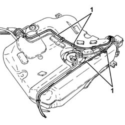
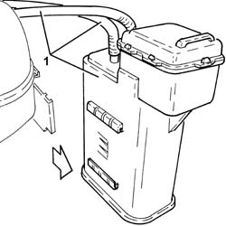

1080E20 ACTIVE CARBON FILTER FOR FUEL VAPOURS - R + R
- Path
- Procedures > 10 ENGINE > 1080 EMISSION CONTROL SYSTEM > 1080E EVAPORATION CONTROL SYSTEM > 1080E20 ACTIVE CARBON FILTER FOR FUEL VAPOURS - R + R
- Kind
- repair procedure (removal / refitting; the operation number is the code)
- Applies to
- engines: 1.8, 2.2; all production periods
- Interactive page
- https://sloeber94.github.io/elrnDB-fCrm/en/#/194000373
Applies to: engines: 1.8, 2.2; all production periods
 Removing
Removing
 Refitting
Refitting- Position the vehicle on a lift.
- Make sure that the ignition key is in the OFF position, then disconnect the battery terminal (-).
Description | Connector | |
|---|---|---|
- | Battery |
Op. 4450B08 RIGHT REAR WHEEL - R.R
Op. 7055B45 RIGHT REAR WHEEL ARCH LINER - R.R
Op. 1040A30 FUEL FILLER PIPE ASSEMBLY- R + R
Op. 1076B20 REAR EXHAUST SILENCER - R + R
Op. 1076B30 FRONT EXHAUST SILENCER - R + R
Op. 1040A10 FUEL TANK - R + R AND DECANT FUEL
1. Release the active charcoal filter fuel vapour inlet and outlet pipes from the fastenings on the tank.

Applies to: engines: 1.8, 2.2; all production periods
1. Release the fuel vapour active charcoal filter from the mounting bracket on the tank and remove it complete with pipes.

Applies to: engines: 1.8, 2.2; all production periods
Refitting
Removing- Place the fuel vapour active charcoal filter complete with pipes in its housing and secure it to the mounting bracket on the tank.
- Secure the active charcoal filter fuel vapour inlet and outlet pipes to the fastenings on the tank.
Op. 1040A10 FUEL TANK - R + R AND DECANT FUEL
Op. 1076B30 FRONT EXHAUST SILENCER - R + R
Op. 1076B20 REAR EXHAUST SILENCER - R + R
Op. 1040A30 FUEL FILLER PIPE ASSEMBLY- R + R
Op. 7055B45 RIGHT REAR WHEEL ARCH LINER - R.R
Op. 4450B08 RIGHT REAR WHEEL - R.R
- Connect the negative battery terminal.
- Remove the vehicle from the lift.